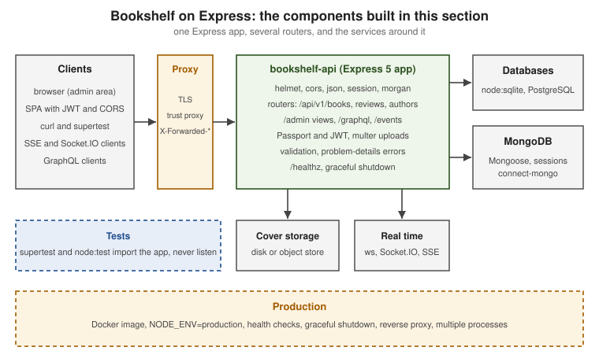

Express.js
|
This content was generated with the assistance of AI and should be verified against the official documentation before being relied on in production. |
This section is written against Express 5.3 (5.3.0, released 2026-10-09, the latest release) running on Node.js 24 and
26, with the differences of Express 4.22 (4.22.3, in maintenance) called out wherever they matter. Express 5 requires
Node.js 18 or later; Express 4 runs on very old Node.js lines. The versions were checked on 2026-10-29. Express 5.0
shipped in 2024, 5.1.0 (2025-03-31) became the default latest release, and the 5.x line keeps receiving monthly
security and bug-fix releases, so each page says which version introduced, changed or removed a behaviour. No Express 6
has been announced, and the section documents only what the current releases do.
What Express is
Express is the minimal, unopinionated web framework for Node.js. It is a thin layer over node:http: it adds a router,
a middleware pipeline, a richer request and response, view rendering and a handful of conventions, and leaves
everything else (validation, persistence, authentication, project layout) to you and to the ecosystem. Most of the work
is done by small, separately versioned modules: router and path-to-regexp for routing, body-parser for request
bodies, serve-static and send for files, finalhandler for the last response, and proxy-addr for proxy trust. It is an
OpenJS Foundation project and, years after its first release in 2010, the framework most other Node.js frameworks are
measured against or built on, including NestJS through its default HTTP platform.
This section is for developers who:
-
know some JavaScript or TypeScript and want to learn Express properly, beyond copy-pasted tutorials
-
know the Node.js runtime (see the Node.js section) and want the framework layer on top
-
come from Spring Boot, Django, Flask, FastAPI or ASP.NET and want to compare an unopinionated stack with an opinionated one
-
maintain Express 4 code, or follow books and tutorials that target it, and need to know what changed in Express 5
What’s covered
The official examples
The expressjs/express repository ships 25 runnable applications in its examples directory
(described on the official examples page). Each is explained, modernised for
Express 5 and mapped to the Bookshelf scenario on the page below. The
Getting Started page shows how to run them.
| Example | What it demonstrates | Explained on |
|---|---|---|
Session-based login with hashed passwords and a restricted page |
||
|
||
Client-side sessions stored in a signed cookie |
||
Reading, setting and clearing cookies |
||
|
||
Server-rendered pages with the EJS template engine |
||
An error-handling middleware that formats errors |
||
Custom 404 and 500 pages |
||
The smallest possible Express application |
||
Registering a custom view engine for Markdown files |
||
Several routers mounted on one application |
||
Controllers, models and views in separate folders |
||
Tracking online users and a long-lived stream |
||
|
||
A resource-style route set for a collection |
||
Declaring routes from a map of paths and handlers |
||
Route-level middleware chains and |
||
Routes split into separate modules |
||
A small search API with query parameters |
||
Server-side sessions with |
||
Mounting several static directories |
||
Host-based routing with the |
||
A custom |
||
Passing data to views with |
||
A JSON web service secured with API keys |
Reading path
The pages are ordered so that each one builds on the previous ones:
-
Foundations: what Express is, versions and support, getting started, TypeScript, project structure
-
Routing: routes, route paths and parameters, routers and modular apps
-
Middleware: how middleware works, body parsing, the official middleware modules
-
Application, request and response: settings,
req,res, content negotiation and HTTP caching -
Static files and views:
express.static, template engines -
Errors, debugging and logging: error handling,
debug, request logging -
APIs and data: REST design, validation, databases, MongoDB and Mongoose, uploads and downloads
-
Integrations: GraphQL, WebSockets and Server-Sent Events, SPAs and server-side rendering
-
Security: best practices, cookies and sessions, authentication and authorization, CORS
-
Testing: supertest,
node:test, in-memory databases and end-to-end tests -
Production: performance, proxies, health checks and graceful shutdown, containers
-
Migration and beyond: Express 5 migration, extending the API, frameworks built on Express
Source: Express: Express examples
Running example
Every example builds Bookshelf, the same domain used by the Node.js, NestJS, FastAPI and Next.js sections, so the
stacks can be compared. It starts as a hello-world app and grows into a bookshelf-api JSON API
(/api/v1/books, /reviews and /authors) with validation, problem-details errors, pagination and filtering. It
persists data with node:sqlite first, then PostgreSQL through pg or Prisma and MongoDB through Mongoose. It adds a
server-rendered admin area with a template engine, sessions and Passport login, JWT-protected endpoints with CORS for a
single-page application, cover uploads with multer and downloads with res.download, a GraphQL endpoint, a live "new
review" feed over Server-Sent Events and Socket.IO, supertest and node:test suites, a Dockerfile, health checks and
graceful shutdown. Pages build on each other, but each can be read on its own.

Related material on this site
Existing pages are linked rather than repeated; the Express pages add only the framework layer.
| Existing page(s) | How it relates to this section |
|---|---|
Node.js, HTTP Server Fundamentals, Server Timeouts, Limits & Hardening |
The runtime underneath Express. The Node.js section owns the event loop, |
A one-page Express 5 overview next to Fastify. It stays the overview and the place for the Fastify comparison. |
|
NestJS, whose default HTTP platform is Express. Linked from the frameworks page. |
|
Popularity, ecosystem and radar charts that include Express. |
|
Backend framework choice, including JavaScript and TypeScript on Node.js. |
|
CORS theory. The Express CORS page shows only the |
|
OAuth, OpenID Connect and JWT theory, linked from the authentication page. |
|
GraphQL theory, serving over HTTP and demand control, linked from the GraphQL page. |
|
Socket.IO and the WebSocket protocol, linked from the real-time page. |
|
Engines, drivers and pagination. The database pages show only how to use them from Express. |
|
The front ends that pair with Express, linked from the SPA and SSR page. |
|
Containers and probes, linked from the deployment and health-check pages. |
|
The languages, linked for syntax. |
Bibliography
Every source used to generate this section, each linked to its official website. Individual pages list the subset they
derive from under their own == References heading. The books below were consulted for concept coverage, narrative and
structure only; every code example is written against the current official documentation, which wins wherever a book
differs, and each page says where a book is outdated.
Books
-
Aneeta Sharma, Full-Stack Web Development with Vue.js and Node, Packt Publishing, 2018, ISBN 978-1-78883-114-7 (print): Packt page
-
Fernando Monteiro, Learning Single-page Web Application Development, Packt Publishing, 2014, ISBN 978-1-78355-209-2 (print): Packt page
-
Daniel Bugl, Modern Full-Stack React Projects, Packt Publishing, 2024, ISBN 978-1-83763-795-9 (print): Packt page
-
Fernando Monteiro, Node.js 6.x Blueprints, Packt Publishing, 2016, ISBN 978-1-78588-843-4 (print): Packt page
Each book also has a companion-code repository on the publisher’s GitHub organization, PacktPublishing, which was used only to understand the scope of the projects.
Official Express documentation and resources
-
Express website: installing, hello world, generator, basic routing, static files, examples and FAQ
-
Routing, writing middleware, using middleware, overriding the Express API, using template engines, error handling, debugging, behind proxies, database integration, migrating to 5 and migrating to 4
-
API reference: express(), Application, Request, Response and Router for 5.x, plus the 4.x and 3.x references where older behaviour is shown
-
Advanced topics: performance best practices, security best practices, health checks and graceful shutdown, security updates and developing template engines
-
Resources: middleware (one page per module), utility modules, community, contributing and glossary
-
Version support and the Express blog, including the 5.1 latest release post and the website redesign post
-
expressjs/express: the examples, releases, History.md and security advisories
-
The middleware repositories under expressjs, pillarjs/router, pillarjs/path-to-regexp, and the Express codemods (expressjs/codemod, codemod.link/express)
Official documentation of ecosystem projects
-
Security: Helmet, express-rate-limit, rate-limiter-flexible, csrf-csrf, csrf-sync, cors (expressjs/cors)
-
Validation: express-validator, Zod, Joi, Ajv
-
Authentication: Passport and the strategies used, express-jwt, jose, openid-client, bcrypt, argon2, connect-redis, connect-mongo
-
Views: Pug, EJS, express-handlebars, Nunjucks, @ladjs/consolidate
-
Data: Mongoose, MongoDB Node.js driver, node-postgres, mysql2, Prisma, Drizzle, Sequelize, TypeORM, Knex, Kysely, MongoDB Atlas
-
APIs and real time: Apollo Server and its Express integration, graphql-http, Socket.IO, ws, swagger-ui-express, express-openapi-validator
-
Front ends: Vite SSR guide, connect-history-api-fallback
-
Testing: supertest, Jest, Vitest, Playwright, mongodb-memory-server, Testcontainers for Node.js
-
Observability and operations: pino and pino-http, debug, morgan, PM2, piscina, autocannon, the Docker official Node image, GitHub Actions
-
Frameworks: NestJS (
@nestjs/platform-express), LoopBack 4, Sails, FeathersJS, Fastify, Koa, Hono
Specifications and standards
-
RFC 9110: HTTP Semantics, RFC 9111: HTTP Caching and RFC 9112: HTTP/1.1
-
The HTTP QUERY method (IETF HTTP Working Group)
-
RFC 6455: The WebSocket Protocol and Server-Sent Events in the WHATWG HTML Standard
-
RFC 7519: JSON Web Token and RFC 8725: JWT Best Current Practices
-
OWASP: the Cheat Sheet Series (session management, password storage, CSRF prevention, input validation, Node.js security) and the Top 10